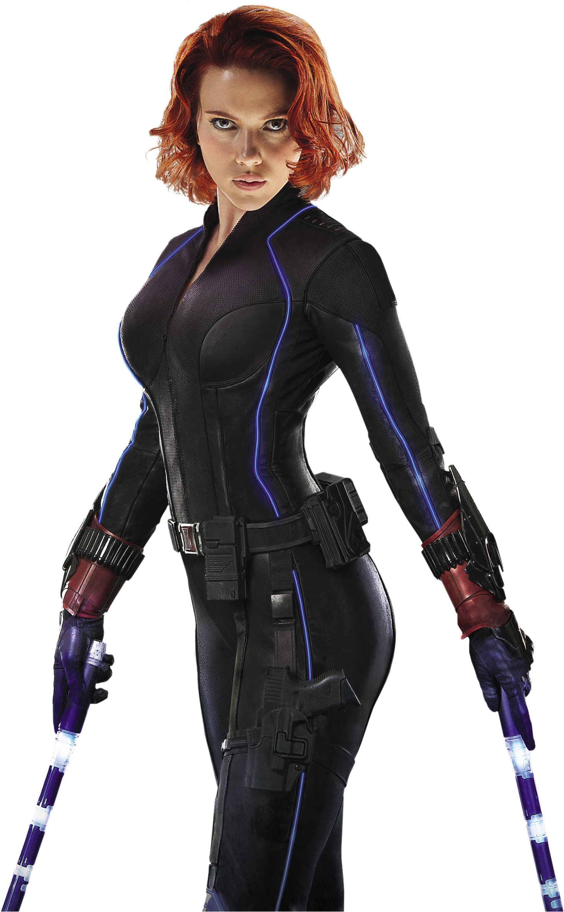

Capitan América
El Capitán América, cuyo nombre real es Steven "Steve" Grant Rogers, fue un superhéroe ficticio que aparece en los cómics estadounidenses publicados por Marvel Comics. Creado por los historietistas Joe Simon y Jack Kirby, el personaje apareció por primera vez en Captain America Comics #1 (marzo de 1941) de Timely Comics, predecesor de Marvel Comics. El Capitán América fue diseñado como un supersoldado patriota que luchaba frecuentemente contra las potencias del Eje en la Segunda Guerra Mundial, y fue el personaje más popular de Timely Comics durante el período de guerra. La popularidad de los superhéroes se desvaneció después de la guerra, y el cómic del Capitán América dejó de editarse en 1950, con un breve resurgimiento en 1953. Desde que Marvel Comics revivió al personaje en 1964, el Capitán América se ha mantenido en publicación.
Especialidad
Sentidos, agilidad, velocidad y fuerza sobrehumanas. Gran habilidad con su escudo. Instinto de liderazgo, gran resistencia, inmune a gases y enfermedades, curación y regeneración acelerada. Genio táctico, artista marcial, acróbata experto.

Iron Man
Stark es un fabricante, genio inventor, héroe y explayboy propietario de Industrias Stark. Al comienzo de la serie, es el principal fabricante de armas para el ejército de los Estados Unidos, hasta que cambia de parecer y redirige su conocimiento técnico hacia la creación de armaduras metalizadas que usa para defenderse de aquellos que amenazan la paz alrededor del mundo.
Especialidad
Como Tony Stark: Intelecto nivel genio. Experto científico e ingeniero. Como Iron Man: Superfuerza, durabilidad y resistencia por armadura. Vuelo supersónico. Repulsores de energía y misiles de proyección. Regenerativo soporte vital. Uso de equipamiento, dispositivos y armamento de alta tecnología.

Hawkeye
Barton, un agente de S.H.I.E.L.D., es enviado a matar a Natasha Romanoff, pero en cambio la recluta para unirse a S.H.I.E.L.D., y se convierten en amigos cercanos trabajando en varias misiones juntos, incluida una en Budapest en la que Romanoff intenta matar al general Dreykov. En algún momento, Nick Fury ayuda a Barton a establecer una casa de seguridad para su familia en una granja en Misuri.
En 2011, Barton es enviado a una misión en Nuevo México, donde se arma con un arco compuesto, preparándose para evitar que Thor recupere a Mjolnir, pero elige no atacar después de ver a Thor no levantar el martillo.
Especialidad
Arquero excepcional, con una puntería superperfecta, una excelente percepción y reflejos extraordinarios. Acróbata experto. Buen combatiente cuerpo a cuerpo. Arcos fabricados por industrias Stark, uno corto, otro largo y otro compuesto. Flechas multiusos.

Hulk
Dr. Bruce Banner es un físico de renombre que se sometió a un experimento de radiación gamma diseñado para replicar el programa del "super soldado" de la era de la Segunda Guerra Mundial. El experimento falló y ahora hace que Banner se transforme en una criatura verde, descomunal y gigantesca, con una fuerza y durabilidad sobrehumanas, siempre que su frecuencia cardíaca supere los 200 bpm o si se pone en peligro de muerte.
Como Hulk, posee habilidades sobrehumanas que incluyen mayor fuerza y durabilidad. Con el tiempo, Banner demuestra una capacidad cada vez mayor para controlar la transformación y se convierte en miembro fundador de los Vengadores.
Especialidad
Súper fuerza, súper resistencia, súper salto, invulnerabilidad, regeneración, longevidad, factor de curación acelerado, capacidad de respirar bajo el agua, respirar en el espacio y ver fantasmas y otras entidades astrales.

Black Widow
Romanoff es una experta espía y combatiente cuerpo a cuerpo, entrenada en la Habitación Roja desde la infancia para ser una asesina de la KGB. Esto la pone bajo el radar de S.H.I.E.L.D., y Clint Barton es enviado a matarla, pero en cambio le perdona la vida y la recluta para la organización. Cuando Nick Fury activa la Iniciativa Vengadores, se convierte en miembro fundador. Tras las consecuencias relacionadas con los Acuerdos de Sokovia, Romanoff se convierte en una fugitiva y finalmente se reúne con su familia adoptiva, incluida su hermana Yelena Belova, y trabajan juntas para destruir el programa Black Widow del general Dreykov.
Especialidad
Experta en karate, judo, aikido, savate, boxeo y múltiples estilos de kung fu. Ella es una atleta de clase olímpica, gimnasta, acróbata y aérea capaz de numerosas maniobras complejas y hazañas.Natasha es una tiradora muy precisa en puntería y lanzamiento de cuchillos
Thor
Thor Odinson es el Dios del Trueno, anterior Rey de Nuevo Asgard y miembro fundador de los Vengadores. Cuando su conducta irresponsable amenazó a los Asgardianos a entrar en otra guerra con los Gigantes de Hielo, fue despojado de su poder y desterrado en la Tierra por su padre, Odín. Mientras estaba exiliado, Thor aprendió sobre la humildad, encontró el amor en Jane Foster y ayudó a salvar a sus nuevos amigos del Destructor, quien fue enviado por su celoso hermano adoptivo, Loki. Como tal, Thor se remidió ante los ojos de su padre, se le concedió el acceso a su poder una vez más y regresó a Asgard para confrontar a Loki, quien cayó al vacío cuando Thor destruyó el Puente Arcoíris para impedir la destrucción de Jotunheim.
Especialidad
Thor posee una resistencia muy alta a las lesiones físicas que se aproxima a la invulnerabilidad.Incluso ha sobrevivido explosiones de energía de los Celestiales. Como dios nórdico del trueno, Thor puede invocar los elementos de la tormenta y usa Mjolnir como una herramienta para enfocar esta habilidad, aunque el martillo no puede controlar el clima artificial, solo natural